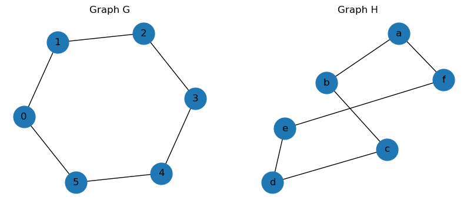
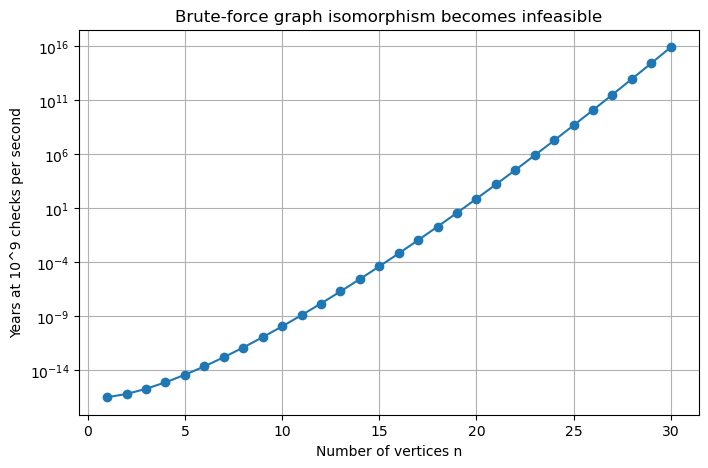
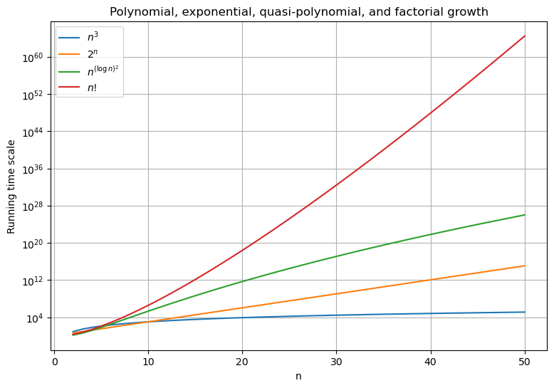
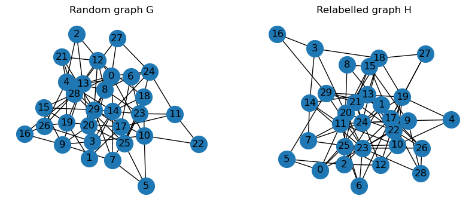
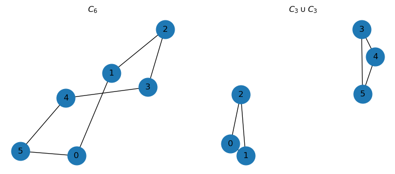
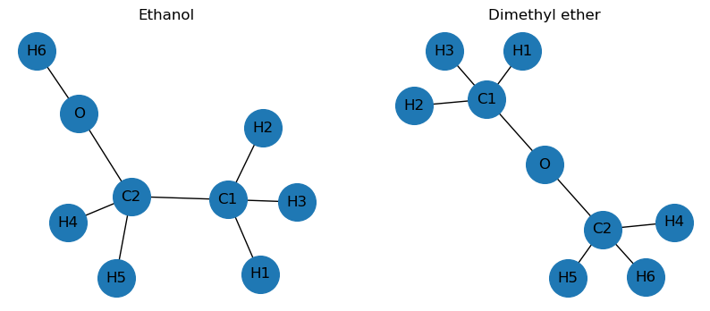

Are G and H isomorphic? TrueSeminar 1: Graphs and Isomorphism
In this seminar we introduce the basic notions of graph theory required for studying graph isomorphism, connectedness, graph complements, and elementary Ramsey theory.
1 Graphs
A simple graph is a pair
\[ G=(V,E), \]
where
- \(V\) is a finite set of vertices;
- \(E\subseteq \binom{V}{2}\) is a set of unordered pairs of distinct vertices called edges.
Throughout the seminar we consider only finite simple graphs.
If \(|V|=p\), \(|E|=q\), then \(G\) is called a \((p,q)\)-graph.
The complete graph on \(n\) vertices is denoted by \(K_n\).
1.1 Degree of a Vertex
The degree of a vertex \(v\) is the number of edges incident with \(v\). It is denoted by \(d(v)\).
The list
\[ (d(v_1),\ldots,d(v_n)) \]
is called the degree sequence of the graph.
Usually the degree sequence is written in non-increasing order.
1.2 Handshake Lemma
One of the most fundamental identities in graph theory is the following.
1.2.1 Theorem (Handshake Lemma)
For every graph \(G\),
\[ \sum_{v\in V(G)} d(v)=2|E(G)|. \]
1.2.2 Proof
Every edge contributes exactly one to the degree of each of its endpoints. Hence every edge contributes two to the total sum of degrees. Therefore
\[ \sum_{v\in V(G)} d(v)=2|E(G)|. \qquad\square \]
1.2.3 Corollary
The number of vertices of odd degree is even.
1.3 Degree Sequences
A sequence
\[ (d_1,\ldots,d_n) \]
is called graphical if there exists a graph whose degree sequence is equal to this sequence.
The Handshake Lemma immediately implies a necessary condition:
\[ d_1+\cdots+d_n \]
must be an even number. This condition is necessary but not sufficient. For example, \((4,4,4,4,2)\) is not graphical.
2 Graph Isomorphism
Two graphs may look different when drawn in the plane while representing exactly the same combinatorial structure.
2.1 Definition
Graphs
\[ G=(V,E), \qquad H=(W,F) \]
are called isomorphic if there exists a bijection \(\varphi:V\to W\) such that
\[ uv\in E \quad\Longleftrightarrow\quad \varphi(u)\varphi(v)\in F. \]
The map \(\varphi\) is called an isomorphism.
We write
\[ G\cong H. \]
Intuitively, two graphs are isomorphic if one can be obtained from the other merely by relabelling the vertices.
2.2 Invariants of Isomorphism
A quantity that is preserved under isomorphism is called a graph invariant.
If
\[ G\cong H, \]
then the following quantities coincide:
- number of vertices;
- number of edges;
- degree sequence;
- number of connected components;
- number of cycles of each length.
Graph invariants are useful for proving that two graphs are not isomorphic.
3 Connected Graphs
A path in a graph is a sequence of vertices
\[ v_0,v_1,\ldots,v_k \]
such that every consecutive pair of vertices is connected by an edge.
3.1 Definition
A graph is called connected if every pair of vertices can be joined by a path.
A maximal connected subgraph is called a connected component.
Every graph can be uniquely decomposed into connected components.
3.2 Trees
A graph is called a tree if it is connected and contains no cycles.
Trees play a central role in graph theory.
3.3 Complement of a Graph
Let \(G=(V,E)\) be a graph. The complement of \(G\) is the graph \(\overline G=(V,\overline E)\), where
\[ uv\in\overline E \quad\Longleftrightarrow\quad uv\notin E. \]
Thus
\[ E(\overline G) = E(K_n)\setminus E(G). \]
3.4 Self-Complementary Graphs
A graph is called self-complementary if
\[ G\cong \overline G. \]
3.4.1 Proposition
If \(G\) is self-complementary and has \(n\) vertices, then
\[ |E(G)| = \frac12\binom{n}{2}. \]
3.5 Connectivity of Complements
3.5.1 Theorem
For every graph \(G\), at least one of the graphs
\[ G \quad\text{and}\quad \overline G \]
is connected.
3.5.2 Proof
Assume that \(G\) is disconnected. Then its vertices can be partitioned into at least two connected components.
Vertices belonging to different components are not adjacent in \(G\), and therefore become adjacent in \(\overline G\). Consequently every component of \(G\) is connected to every other component inside \(\overline G\), implying that \(\overline G\) is connected. \(\square\)
3.5.3 Corollary
Every self-complementary graph is connected.
3.6 Non-Isomorphic Graphs
Two graphs are called non-isomorphic if no isomorphism between them exists.
When counting graphs up to isomorphism, graphs differing only by vertex labels are considered identical.
This leads to the notion of an unlabelled graph, which represents an entire isomorphism class of labelled graphs.
4 Ramsey Theory
Ramsey theory studies the appearance of order in sufficiently large structures.
4.1 Definition
The Ramsey number \(R(s,t)\) is the smallest integer \(n\) such that every red-blue colouring of the edges of \(K_n\) contains either
- a red copy of \(K_s\), or
- a blue copy of \(K_t\).
5 How to Verify Whether Two Graphs Are Isomorphic
Determining whether two graphs are isomorphic is one of the fundamental problems of graph theory.
The trivial step is to compare the number of vertices and edges.
5.1 Step 1. Compare the Degree Sequences
Compute the degrees of all vertices and sort them in non-increasing order.
If the resulting sequences differ, the graphs are not isomorphic.
5.2 Step 4. Compare Local Structures
Even if two graphs have the same degree sequence, they may still be non-isomorphic.
Useful quantities include:
- number of connected components;
- number of triangles;
- number of cycles of a given length;
- number of vertices of each degree;
- adjacency relations between high-degree vertices.
If any of these quantities differ, the graphs are not isomorphic.
5.3 Step 5. Match Distinguished Vertices
Suppose the graphs have passed all previous tests.
Vertices with unique properties must correspond to each other under any isomorphism.
For example, if a graph contains exactly one vertex of degree \(4\), then this vertex must be mapped to the unique degree-\(4\) vertex of the other graph.
This often greatly reduces the number of possible bijections.
5.4 Step 6. Construct an Explicit Bijection
After identifying corresponding vertices, attempt to define a bijection
\[ \varphi:V(G)\to V(H). \]
One must verify that
\[ uv\in E(G) \quad\Longleftrightarrow\quad \varphi(u)\varphi(v)\in E(H) \]
for every pair of vertices.
If such a bijection exists, then
\[ G\cong H. \]
6 Beyond Graph Invariants: The Graph Isomorphism Problem
The method based on graph invariants is extremely useful in practice. However, there exist many pairs of non-isomorphic graphs that share all common invariants such as:
- number of vertices;
- number of edges;
- degree sequence;
- number of connected components;
- number of cycles of various lengths.
Consequently, a more systematic approach is required.
This leads to one of the most famous algorithmic problems in graph theory.
6.1 The Graph Isomorphism Problem
6.1.1 Input
Two graphs
\[ G=(V,E), \qquad H=(W,F) \]
with
\[ |V|=|W|=n. \]
6.1.2 Question
Does there exist a bijection \(\varphi:V\to W\) such that
\[ uv\in E(G) \quad\Longleftrightarrow\quad \varphi(u)\varphi(v)\in E(H)? \]
If such a bijection exists, the graphs are isomorphic.
6.2 A Naive Algorithm
A brute-force approach consists of checking all possible bijections
\[ \varphi:V\to W. \]
Since there are \(n!\) such bijections, the running time is approximately \(O(n!)\).
Using Stirling’s approximation,
\[ n! \approx \sqrt{2\pi n} \left(\frac{n}{e}\right)^n, \]
which grows extremely rapidly.
6.2.1 How Long Would Brute Force Take?
Suppose, very optimistically, that a modern computer can check \(10^9\) (one billion) bijections per second. Then the running time is approximately
\[ \frac{n!}{10^9} \]
seconds.
For example, \(20! \approx 2.4\cdot 10^{18}\).
Hence brute force would take approximately \(\frac{20!}{10^9} \approx 2.4\cdot 10^9\) seconds.
Since one year has about \(3.15\cdot 10^7\) seconds, this is approximately
\[ \frac{2.4\cdot 10^9}{3.15\cdot 10^7} \approx 77 \]
years.
Thus, even for graphs with only \(20\) vertices, the naive algorithm is already infeasible.
The situation becomes much worse as \(n\) grows.
| Number of vertices \(n\) | Number of bijections \(n!\) | Time at \(10^9\) checks/sec |
|---|---|---|
| \(10\) | \(3.6\cdot 10^6\) | less than \(1\) second |
| \(15\) | \(1.3\cdot 10^{12}\) | about \(22\) minutes |
| \(20\) | \(2.4\cdot 10^{18}\) | about \(77\) years |
| \(25\) | \(1.6\cdot 10^{25}\) | about \(5\cdot 10^8\) years |
| \(30\) | \(2.7\cdot 10^{32}\) | about \(8.4\cdot 10^{15}\) years |
Therefore, the brute-force method is not a serious algorithm for graph isomorphism, except for very small graphs.
This explains why more sophisticated methods are needed: instead of checking all possible vertex permutations, modern algorithms try to exploit graph structure, vertex refinement, symmetry, and group-theoretic ideas.
6.3 Complexity-Theoretic Status
The Graph Isomorphism problem occupies a unique position in complexity theory.
It is known that
\[ \text{GI}\in\text{NP}. \]
Indeed, if an isomorphism exists, it can be verified in polynomial time.
Surprisingly, despite decades of research:
- no polynomial-time algorithm is known for general graphs;
- no proof exists that the problem is NP-complete.
Therefore Graph Isomorphism is one of the few classical problems whose precise complexity remains unknown.
6.4 The Weisfeiler–Leman Method
The most important practical idea is the Weisfeiler–Leman refinement algorithm.
The basic version proceeds as follows.
- Assign every vertex the same color.
- Repeatedly recolor each vertex according to the multiset of colors of its neighbors.
- Continue until the coloring stabilizes.
If two graphs produce different color distributions, they cannot be isomorphic.
The algorithm runs in polynomial time.
In practice, it distinguishes most graphs encountered in applications.
6.5 Babai’s Breakthrough (2015)
Babai proved that Graph Isomorphism can be solved in
\[ 2^{(\log n)^{O(1)}} \]
time.
Such running times are called quasi-polynomial.
They are significantly smaller than exponential running times such as \(2^n\) but still larger than every polynomial \(n^k\).
6.6 Special Classes of Graphs
Although the complexity of the Graph Isomorphism problem is unknown for arbitrary graphs, polynomial-time algorithms are known for many important graph families.
Examples include:
- trees;
- planar graphs;
- interval graphs;
- bounded-degree graphs;
- graphs of bounded treewidth.
For trees, graph isomorphism can be solved in
\[ O(n) \]
time.
Consequently, the difficulty of the Graph Isomorphism problem comes not from sparse or highly structured graphs, but rather from graphs possessing many symmetries.
In practice, special graph classes arise frequently in computer science. Therefore, many real-world instances can be solved much faster than the worst-case theoretical bounds suggest.
6.7 Modern Algorithms
Modern graph isomorphism algorithms do not examine all possible vertex permutations.
Instead, they combine several ideas:
- Vertex refinement techniques.
- Partition refinement.
- Canonical labeling.
- Backtracking and pruning.
- Group-theoretic methods.
The most influential practical approach is the Weisfeiler–Leman refinement procedure, which repeatedly partitions vertices into classes according to their local neighborhoods.
These methods eliminate the overwhelming majority of impossible vertex correspondences before any exhaustive search is attempted.
6.8 State of the Art
The current understanding of the Graph Isomorphism problem may be summarized as follows.
Graph Isomorphism belongs to the complexity class
\[ \mathrm{NP}. \]
No polynomial-time algorithm is known for arbitrary graphs.
No proof exists that Graph Isomorphism is NP-complete.
Babai’s quasi-polynomial algorithm is the best known theoretical result for general graphs.
Polynomial-time algorithms are known for many important graph classes.
Practical software can routinely solve instances involving thousands or even millions of vertices.
Consequently, Graph Isomorphism occupies a unique position among classical computational problems: it is neither known to be easy nor known to be hard.

n = 10, n! = 3.629e+06, time = 1.151e-10 years
n = 15, n! = 1.308e+12, time = 4.147e-05 years
n = 20, n! = 2.433e+18, time = 7.715e+01 years
n = 25, n! = 1.551e+25, time = 4.919e+08 years
n = 30, n! = 2.653e+32, time = 8.411e+15 years

Are G and H isomorphic? True
Time used: 0.003286 seconds
Degree sequence of G: [2, 2, 2, 2, 2, 2]
Degree sequence of H: [2, 2, 2, 2, 2, 2]
Is G connected? True
Is H connected? False
Are G and H isomorphic? False
Are the molecular graphs isomorphic? False